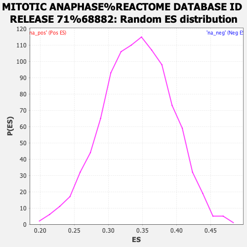

| | | Dataset | expr_RNAseq_ranks |
| Phenotype | NoPhenotypeAvailable |
| Upregulated in class | na_neg |
| GeneSet | MITOTIC ANAPHASE%REACTOME DATABASE ID RELEASE 71%68882 |
| Enrichment Score (ES) | -0.41314158 |
| Normalized Enrichment Score (NES) | NaN |
| Nominal p-value | NaN |
| FDR q-value | 1.0 |
| FWER p-Value | 0.0 |
Table: GSEA Results Summary
 Fig 1: Enrichment plot: MITOTIC ANAPHASE%REACTOME DATABASE ID RELEASE 71%68882
Fig 1: Enrichment plot: MITOTIC ANAPHASE%REACTOME DATABASE ID RELEASE 71%68882
Profile of the Running ES Score & Positions of GeneSet Members on the Rank Ordered List
| PROBE | GENE SYMBOL | GENE_TITLE | RANK IN GENE LIST | RANK METRIC SCORE | RUNNING ES | CORE ENRICHMENT | | 1 | NUP85 | | | 892 | 4.368 | -0.0210 | No |
| 2 | CENPT | | | 1324 | 3.700 | -0.0222 | No |
| 3 | DYNC1LI2 | | | 2204 | 2.847 | -0.0510 | No |
| 4 | ITGB3BP | | | 3336 | 2.162 | -0.0965 | No |
| 5 | STAG1 | | | 3625 | 2.017 | -0.0999 | No |
| 6 | SPC25 | | | 4148 | 1.781 | -0.1165 | No |
| 7 | CENPL | | | 4200 | 1.764 | -0.1093 | No |
| 8 | RCC2 | | | 4354 | 1.708 | -0.1075 | No |
| 9 | NDE1 | | | 4495 | 1.660 | -0.1053 | No |
| 10 | PPP2R1A | | | 4606 | 1.614 | -0.1019 | No |
| 11 | DYNC1I1 | | | 4845 | 1.531 | -0.1055 | No |
| 12 | PSMC3 | | | 4897 | 1.509 | -0.0996 | No |
| 13 | ANAPC5 | | | 5199 | 1.405 | -0.1071 | No |
| 14 | DSN1 | | | 5451 | 1.324 | -0.1124 | No |
| 15 | LMNB1 | | | 5466 | 1.320 | -0.1058 | No |
| 16 | AURKB | | | 5606 | 1.285 | -0.1057 | No |
| 17 | ANAPC2 | | | 5633 | 1.274 | -0.0999 | No |
| 18 | CDC20 | | | 5730 | 1.245 | -0.0978 | No |
| 19 | SGOL2 | | | 5753 | 1.238 | -0.0920 | No |
| 20 | SEC13 | | | 5787 | 1.231 | -0.0868 | No |
| 21 | PSMB9 | | | 5951 | 1.179 | -0.0885 | No |
| 22 | PSMB10 | | | 6022 | 1.158 | -0.0856 | No |
| 23 | PSMD13 | | | 6118 | 1.134 | -0.0841 | No |
| 24 | CDCA5 | | | 6275 | 1.091 | -0.0859 | No |
| 25 | KNTC1 | | | 6580 | 1.014 | -0.0957 | No |
| 26 | MIS12 | | | 6629 | 1.004 | -0.0925 | No |
| 27 | MAD1L1 | | | 6640 | 1.002 | -0.0874 | No |
| 28 | PPP2R5D | | | 6672 | 0.995 | -0.0834 | No |
| 29 | ESPL1 | | | 6698 | 0.988 | -0.0792 | No |
| 30 | INCENP | | | 7245 | 0.866 | -0.1021 | No |
| 31 | NSL1 | | | 7334 | 0.846 | -0.1019 | No |
| 32 | PSMD9 | | | 7736 | 0.758 | -0.1181 | No |
| 33 | PSMC4 | | | 7850 | 0.732 | -0.1197 | No |
| 34 | UBC | | | 7851 | 0.732 | -0.1156 | No |
| 35 | NUP107 | | | 7964 | 0.708 | -0.1174 | No |
| 36 | NDEL1 | | | 8020 | 0.695 | -0.1163 | No |
| 37 | SGOL1 | | | 8109 | 0.676 | -0.1170 | No |
| 38 | CDCA8 | | | 8219 | 0.655 | -0.1189 | No |
| 39 | CENPO | | | 8474 | 0.602 | -0.1284 | No |
| 40 | BIRC5 | | | 8485 | 0.599 | -0.1256 | No |
| 41 | NUP160 | | | 8500 | 0.598 | -0.1229 | No |
| 42 | SMC1A | | | 8539 | 0.591 | -0.1216 | No |
| 43 | PLK1 | | | 8563 | 0.585 | -0.1195 | No |
| 44 | BUB1 | | | 8672 | 0.569 | -0.1218 | No |
| 45 | PSMD3 | | | 8901 | 0.526 | -0.1305 | No |
| 46 | CLASP2 | | | 8945 | 0.520 | -0.1297 | No |
| 47 | SPC24 | | | 9024 | 0.506 | -0.1309 | No |
| 48 | PSMB8 | | | 9263 | 0.462 | -0.1404 | No |
| 49 | UBB | | | 9599 | 0.407 | -0.1552 | No |
| 50 | CLASP1 | | | 9649 | 0.400 | -0.1554 | No |
| 51 | NUP43 | | | 9813 | 0.376 | -0.1616 | No |
| 52 | LEMD2 | | | 9988 | 0.349 | -0.1686 | No |
| 53 | B9D2 | | | 10164 | 0.319 | -0.1757 | No |
| 54 | PSMD4 | | | 10216 | 0.311 | -0.1765 | No |
| 55 | NUF2 | | | 10246 | 0.307 | -0.1763 | No |
| 56 | CENPF | | | 10267 | 0.305 | -0.1756 | No |
| 57 | CENPP | | | 10328 | 0.297 | -0.1770 | No |
| 58 | PSME1 | | | 10329 | 0.297 | -0.1753 | No |
| 59 | BUB1B | | | 10334 | 0.296 | -0.1739 | No |
| 60 | PSMF1 | | | 10491 | 0.275 | -0.1803 | No |
| 61 | ANAPC7 | | | 10601 | 0.261 | -0.1844 | No |
| 62 | DYNC1H1 | | | 10743 | 0.243 | -0.1902 | No |
| 63 | KIF18A | | | 10974 | 0.210 | -0.2007 | No |
| 64 | CDC23 | | | 10983 | 0.209 | -0.2000 | No |
| 65 | ANAPC1 | | | 10985 | 0.209 | -0.1989 | No |
| 66 | ZWINT | | | 11242 | 0.176 | -0.2109 | No |
| 67 | ANKLE2 | | | 11282 | 0.171 | -0.2119 | No |
| 68 | KIF2C | | | 11296 | 0.170 | -0.2116 | No |
| 69 | MAD2L1 | | | 11305 | 0.169 | -0.2111 | No |
| 70 | UBE2C | | | 11452 | 0.151 | -0.2177 | No |
| 71 | CENPC | | | 11770 | 0.106 | -0.2332 | No |
| 72 | RANGAP1 | | | 11861 | 0.098 | -0.2373 | No |
| 73 | PMF1 | | | 11908 | 0.090 | -0.2391 | No |
| 74 | SKA1 | | | 12081 | 0.067 | -0.2475 | No |
| 75 | NDC80 | | | 12101 | 0.065 | -0.2481 | No |
| 76 | SMC3 | | | 12315 | 0.044 | -0.2587 | No |
| 77 | PSMD7 | | | 12345 | 0.041 | -0.2599 | No |
| 78 | PSMD8 | | | 12371 | 0.038 | -0.2610 | No |
| 79 | PSMC5 | | | 12462 | 0.028 | -0.2654 | No |
| 80 | ANAPC4 | | | 12564 | 0.019 | -0.2705 | No |
| 81 | CENPE | | | 12605 | 0.015 | -0.2724 | No |
| 82 | NUP37 | | | 12678 | 0.008 | -0.2760 | No |
| 83 | PSMD11 | | | 12718 | 0.004 | -0.2780 | No |
| 84 | PPP2R5B | | | 12722 | 0.004 | -0.2781 | No |
| 85 | CENPI | | | 12842 | -0.010 | -0.2841 | No |
| 86 | XPO1 | | | 12888 | -0.014 | -0.2863 | No |
| 87 | CASC5 | | | 12910 | -0.017 | -0.2873 | No |
| 88 | CENPM | | | 13309 | -0.061 | -0.3072 | No |
| 89 | ZW10 | | | 13414 | -0.073 | -0.3121 | No |
| 90 | DYNC1LI1 | | | 13649 | -0.101 | -0.3235 | No |
| 91 | CENPA | | | 13728 | -0.112 | -0.3268 | No |
| 92 | ZWILCH | | | 13775 | -0.118 | -0.3285 | No |
| 93 | APITD1 | | | 13964 | -0.144 | -0.3373 | No |
| 94 | PSMB4 | | | 14269 | -0.189 | -0.3517 | No |
| 95 | CDC27 | | | 14754 | -0.277 | -0.3748 | No |
| 96 | CENPN | | | 14758 | -0.277 | -0.3734 | No |
| 97 | CENPU | | | 14888 | -0.302 | -0.3783 | No |
| 98 | BUB3 | | | 14910 | -0.306 | -0.3776 | No |
| 99 | SPDL1 | | | 14937 | -0.311 | -0.3772 | No |
| 100 | PSMD2 | | | 15011 | -0.323 | -0.3791 | No |
| 101 | CENPQ | | | 15073 | -0.336 | -0.3803 | No |
| 102 | LEMD3 | | | 15207 | -0.362 | -0.3851 | No |
| 103 | PSMA6 | | | 15302 | -0.381 | -0.3877 | No |
| 104 | PSMA7 | | | 15428 | -0.409 | -0.3918 | No |
| 105 | PSMC2 | | | 15483 | -0.423 | -0.3922 | No |
| 106 | PDS5B | | | 15523 | -0.434 | -0.3917 | No |
| 107 | PTTG1 | | | 15891 | -0.522 | -0.4075 | No |
| 108 | CENPK | | | 15949 | -0.537 | -0.4074 | No |
| 109 | TAOK1 | | | 15974 | -0.544 | -0.4056 | No |
| 110 | NUP133 | | | 16031 | -0.561 | -0.4053 | No |
| 111 | PSME3 | | | 16040 | -0.563 | -0.4026 | No |
| 112 | PPP2R1B | | | 16203 | -0.608 | -0.4074 | No |
| 113 | RPS27A | | | 16231 | -0.616 | -0.4053 | No |
| 114 | WAPAL | | | 16307 | -0.640 | -0.4056 | No |
| 115 | PSMD5 | | | 16317 | -0.642 | -0.4024 | No |
| 116 | CENPH | | | 16357 | -0.654 | -0.4008 | No |
| 117 | UBE2E1 | | | 16488 | -0.688 | -0.4035 | No |
| 118 | ANAPC16 | | | 16561 | -0.722 | -0.4032 | No |
| 119 | PSMC1 | | | 16758 | -0.782 | -0.4088 | Yes |
| 120 | PSMB5 | | | 16822 | -0.803 | -0.4075 | Yes |
| 121 | ANAPC15 | | | 16863 | -0.817 | -0.4050 | Yes |
| 122 | NUDC | | | 16886 | -0.826 | -0.4014 | Yes |
| 123 | VRK1 | | | 16932 | -0.839 | -0.3990 | Yes |
| 124 | PPP1CC | | | 17119 | -0.911 | -0.4034 | Yes |
| 125 | PSMB7 | | | 17131 | -0.916 | -0.3989 | Yes |
| 126 | ANAPC11 | | | 17163 | -0.933 | -0.3952 | Yes |
| 127 | ERCC6L | | | 17256 | -0.971 | -0.3945 | Yes |
| 128 | MAPRE1 | | | 17279 | -0.979 | -0.3901 | Yes |
| 129 | EMD | | | 17314 | -0.992 | -0.3863 | Yes |
| 130 | STAG2 | | | 17323 | -0.995 | -0.3811 | Yes |
| 131 | PDS5A | | | 17353 | -1.005 | -0.3770 | Yes |
| 132 | PSMD6 | | | 17399 | -1.025 | -0.3735 | Yes |
| 133 | PSMA1 | | | 17537 | -1.096 | -0.3744 | Yes |
| 134 | UBE2D1 | | | 17641 | -1.149 | -0.3732 | Yes |
| 135 | RPS27 | | | 17807 | -1.237 | -0.3747 | Yes |
| 136 | PSMD1 | | | 17864 | -1.269 | -0.3704 | Yes |
| 137 | PSMB1 | | | 17899 | -1.288 | -0.3650 | Yes |
| 138 | CLIP1 | | | 17934 | -1.310 | -0.3594 | Yes |
| 139 | PSMB3 | | | 18003 | -1.353 | -0.3552 | Yes |
| 140 | PSMB2 | | | 18017 | -1.360 | -0.3483 | Yes |
| 141 | KIF2A | | | 18023 | -1.364 | -0.3409 | Yes |
| 142 | AHCTF1 | | | 18088 | -1.405 | -0.3363 | Yes |
| 143 | RAD21 | | | 18093 | -1.410 | -0.3286 | Yes |
| 144 | CKAP5 | | | 18123 | -1.430 | -0.3221 | Yes |
| 145 | DYNLL1 | | | 18193 | -1.475 | -0.3174 | Yes |
| 146 | PSME4 | | | 18272 | -1.525 | -0.3128 | Yes |
| 147 | PPP2R5C | | | 18274 | -1.527 | -0.3043 | Yes |
| 148 | CDC26 | | | 18292 | -1.542 | -0.2966 | Yes |
| 149 | PSMA2 | | | 18382 | -1.607 | -0.2921 | Yes |
| 150 | PSMD14 | | | 18398 | -1.620 | -0.2838 | Yes |
| 151 | RANBP2 | | | 18401 | -1.622 | -0.2748 | Yes |
| 152 | PSMD10 | | | 18456 | -1.679 | -0.2682 | Yes |
| 153 | PPP2CB | | | 18464 | -1.688 | -0.2591 | Yes |
| 154 | SKA2 | | | 18507 | -1.726 | -0.2516 | Yes |
| 155 | PAFAH1B1 | | | 18514 | -1.734 | -0.2422 | Yes |
| 156 | DYNC1I2 | | | 18568 | -1.781 | -0.2349 | Yes |
| 157 | PSME2 | | | 18616 | -1.827 | -0.2271 | Yes |
| 158 | PPP2R5E | | | 18896 | -2.135 | -0.2294 | Yes |
| 159 | PSMA4 | | | 18902 | -2.146 | -0.2176 | Yes |
| 160 | CDC16 | | | 18939 | -2.188 | -0.2072 | Yes |
| 161 | DYNLL2 | | | 18950 | -2.201 | -0.1954 | Yes |
| 162 | UBA52 | | | 18984 | -2.251 | -0.1845 | Yes |
| 163 | ANAPC10 | | | 19100 | -2.415 | -0.1768 | Yes |
| 164 | BANF1 | | | 19205 | -2.622 | -0.1675 | Yes |
| 165 | PSMC6 | | | 19213 | -2.629 | -0.1531 | Yes |
| 166 | PSMD12 | | | 19252 | -2.698 | -0.1399 | Yes |
| 167 | PPP2R2A | | | 19381 | -2.963 | -0.1299 | Yes |
| 168 | PPP2R5A | | | 19572 | -3.595 | -0.1194 | Yes |
| 169 | PSMA5 | | | 19642 | -3.966 | -0.1008 | Yes |
| 170 | PSMB6 | | | 19687 | -4.211 | -0.0795 | Yes |
| 171 | SHFM1 | | | 19743 | -4.669 | -0.0561 | Yes |
| 172 | PSMA3 | | | 19758 | -4.864 | -0.0296 | Yes |
| 173 | PPP2CA | | | 19794 | -5.799 | 0.0010 | Yes |
Table: GSEA details [plain text format]

Fig 2: MITOTIC ANAPHASE%REACTOME DATABASE ID RELEASE 71%68882: Random ES distribution
Gene set null distribution of ES for MITOTIC ANAPHASE%REACTOME DATABASE ID RELEASE 71%68882